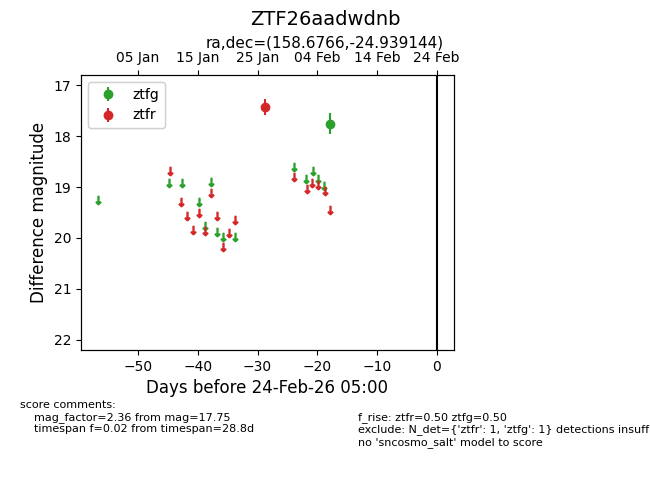
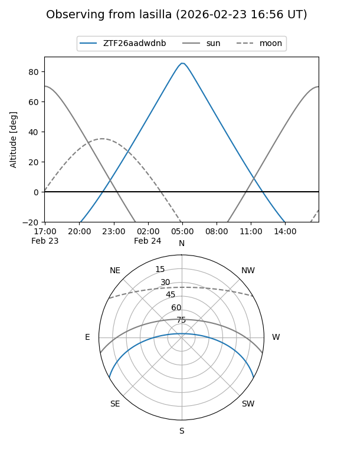
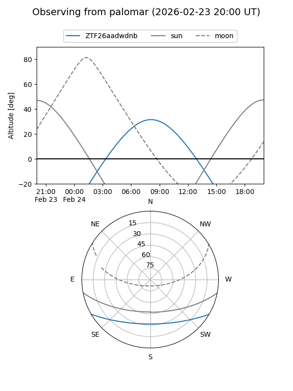

ZTF26aadwdnb
Target ZTF26aadwdnb at 2026-02-24 09:08
Aliases and brokers:
FINK: link
Lasair: link
ALeRCE: link
alt names
ZTF26aadwdnb (ztf,fink_ztf)
Coordinates:
equatorial (ra, dec) = 158.6766,-24.93914
equatorial (HMS+DMS) = 10:34:42.38,-24:56:20.92
galactic (l, b) = (267.5487,+28.38040)
Flags:
Photometry:
last ztfg=17.75, ztfr=17.43
1 ztfg, 1 ztfr detections
Lightcurve

Visibility


Additional plots